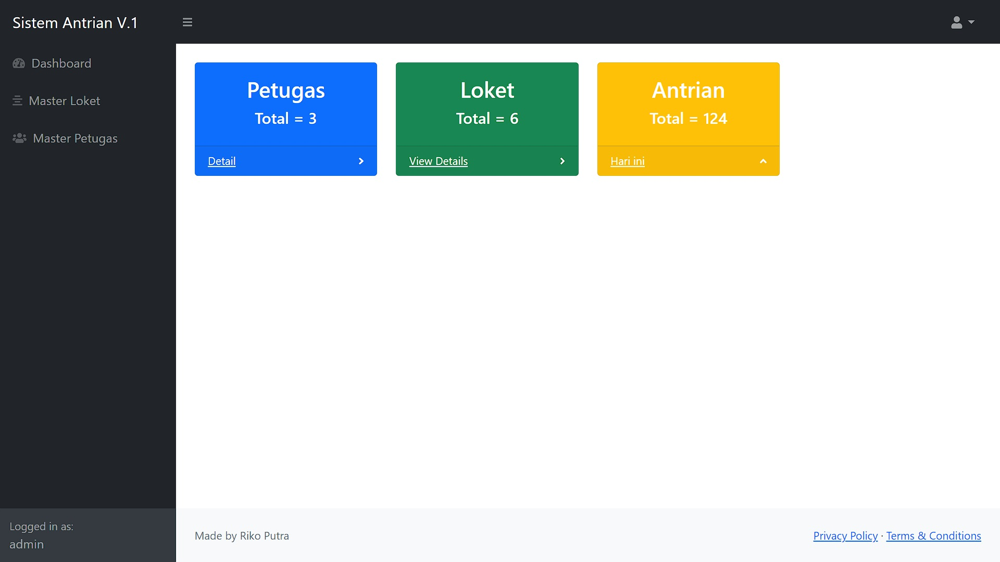
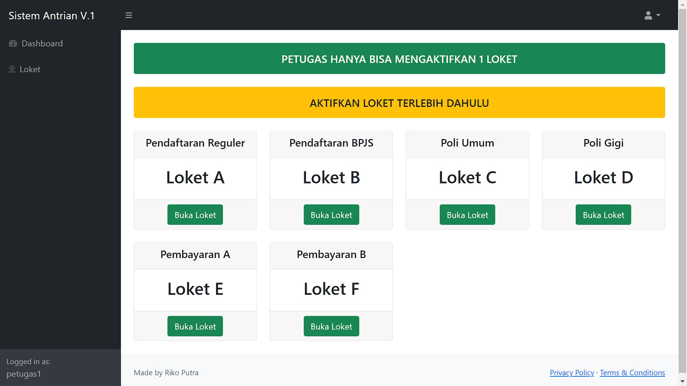

Sistem manajemen laundry yang saya build dengan framework php codeigniter 4. Dengan fitur login admin dan petugas berbeda tampilan dashboard
Fitur
# Mencatat Transaksi Laundry
# CRUD Layanan Laundry
# CRUD Petugas
# Info Pemasukkan Transaksi Hari ini dan Total
Dibuat dengan
# CodeIgniter 4
# Bootstrap 4
Sistem Antrian
Demo
Tampilan Display
Tampilan Admin

Tampilan Petugas

Info
Sistem Antrian Pengunjung yang saya build dengan CodeIgniter 4 dan sedikit JQuery untuk logic suara panggilan berdasarkan antrian yang di panggil petugas